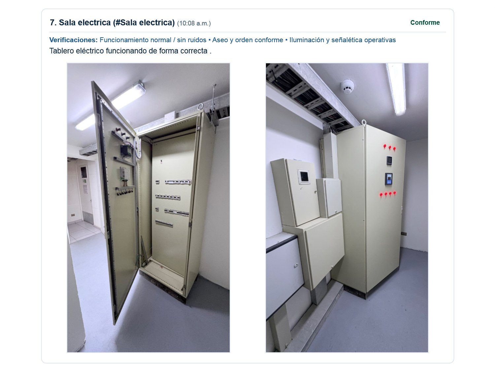
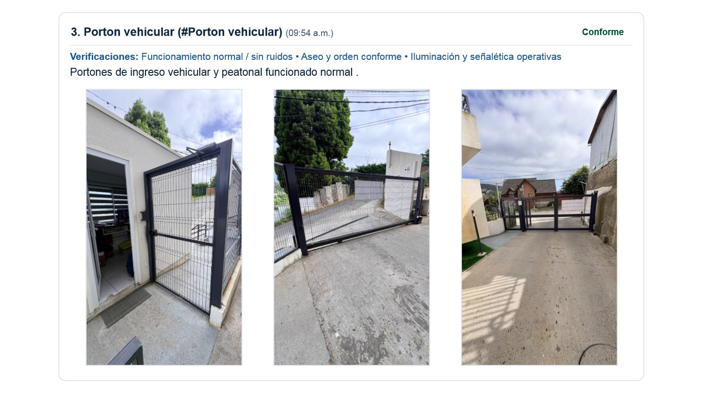

Así supervisamos tu edificio en terreno: Informes de Ronda Operativa en PDF con fotos reales
Una de las quejas más frecuentes que escuchamos de los Comités de Administración en el Gran Concepción es siempre la misma: “El administrador dice que viene al edificio, pero nunca sabemos qué revisó ni en qué estado quedaron la sala de bombas, los tableros eléctricos o los portones”.
En GCO Gestión de Condominios eliminamos esa incertidumbre con tecnología propia. Durante cada visita presencial, nuestro equipo de operaciones utiliza GCO App para inspeccionar sector por sector y emitir un Informe de Ronda Operativa en PDF con fecha, hora exacta, checklist técnico y respaldo fotográfico verificable.
1. Portada ejecutiva con KPIs y alertas inmediatas
El Comité no tiene tiempo para leer correos eternos ni adivinar qué es urgente. Por eso, la primera hoja del documento resume automáticamente cuántos sectores fueron revisados y los clasifica con semáforo: Conformes, Con observación y Acción urgente.

2. Evidencia fotográfica real en cada sala crítica y espacio común
Cada sector inspeccionado registra su hora exacta de revisión, las verificaciones aprobadas (funcionamiento sin ruidos, aseo y orden, iluminación, señalética o necesidad de repuesto) y fotografías comprimidas directamente desde el terreno.


3. Cómo se genera en terreno (sin papeleo ni demoras)
Nuestro módulo de Ronda dentro de GCO App está diseñado para la realidad de los edificios chilenos, incluyendo subterráneos y salas técnicas donde suele fallar la señal móvil:
- Dictado por voz y redacción asistida por IA: el supervisor dicta los hallazgos en terreno y la plataforma los ordena en tono técnico claro sin inventar ni alterar datos.
- Hasta 10 fotografías por sector: comprimidas automáticamente y maquetadas en grilla profesional dentro del PDF.
- Creación directa de órdenes de trabajo: si se detecta una falla o acción urgente, queda vinculada de inmediato al seguimiento de mantención.
- Respaldo automático en la nube: el PDF se archiva en el repositorio documental de la comunidad, creando un historial auditable bajo la Ley N° 21.442.
¿Por qué esto marca la diferencia frente a otros administradores?
| Administración tradicional | GCO Gestión de Condominios (con GCO App) |
|---|---|
| Visitas “de palabra” o comentarios sueltos por WhatsApp sin respaldo formal. | Informe PDF estructurado con fecha, hora exacta por sector y responsable. |
| Las fallas en salas de bombas o tableros se descubren cuando el edificio ya quedó sin agua o luz. | Semáforo preventivo (Conforme / Observación / Urgente) con evidencia visual antes de la emergencia. |
| El Comité debe perseguir correos para rendir cuentas en asambleas. | Historial ordenado y descargable en un clic para asambleas y cumplimiento Ley 21.442. |
¿Te gustaría que tu Comité reciba este nivel de respaldo cada semana?
Agenda nuestro Diagnóstico Técnico de 25 minutos sin costo en el Gran Concepción o explora ahora mismo nuestra plataforma en vivo sin necesidad de registro.